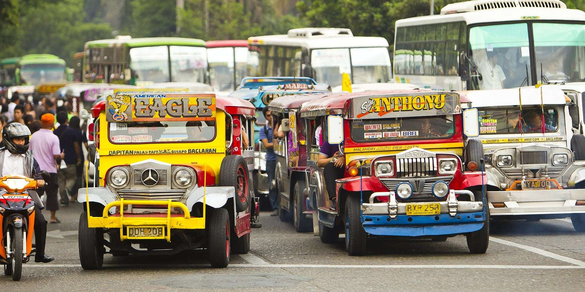

Getting Here
Reaching Sorsogon
Sorsogon is accessible from Manila and major cities by land and air. Within the province, buses, jeepneys, tricycles, and boats connect all towns and attractions.
By Bus
Regular overnight buses (12–14 hrs) depart from Cubao and Pasay, Manila to Sorsogon City daily.
By Air
Nearest airport: Legazpi City, Albay (~75 km north). Daily flights connect Legazpi to Manila.
By Car
Via the Maharlika Highway (Pan-Philippine Highway). Drive time from Manila: 10–12 hours.
By Ferry
From Matnog Port, RORO ferries cross San Bernardino Strait to Allen, Northern Samar — the land link to the Visayas.
Local Transport
Moving around the province
Jeepney — The backbone of inter-town transport. Routes connect Sorsogon City to all major municipalities cheaply and frequently.
Tricycle — Motorized tricycles are the ubiquitous mode of short-distance transport within towns. Negotiate fares before boarding.
Habal-habal — Motorcycle taxis for remote areas and mountain roads. Drivers often serve as informal local guides.
Bangka — Motorized outrigger boats for island hopping in Matnog, whale shark watching in Donsol, and crossing to offshore islands.

Distances
Key routes from Sorsogon City
| Destination | Distance | Mode | Time |
|---|---|---|---|
| Donsol | ~60 km | Bus / Jeepney | 1.5 hours |
| Matnog (Subic Beach) | ~80 km | Bus / Jeepney | 2 hours |
| Bulusan Volcano Park | ~70 km | Bus + Habal-habal | 2–2.5 hours |
| Gubat (Punta Beach) | ~35 km | Jeepney | 45 minutes |
| Legazpi Airport | ~75 km | Bus | 2 hours |
| Manila | ~550 km | Bus (overnight) | 12–14 hours |